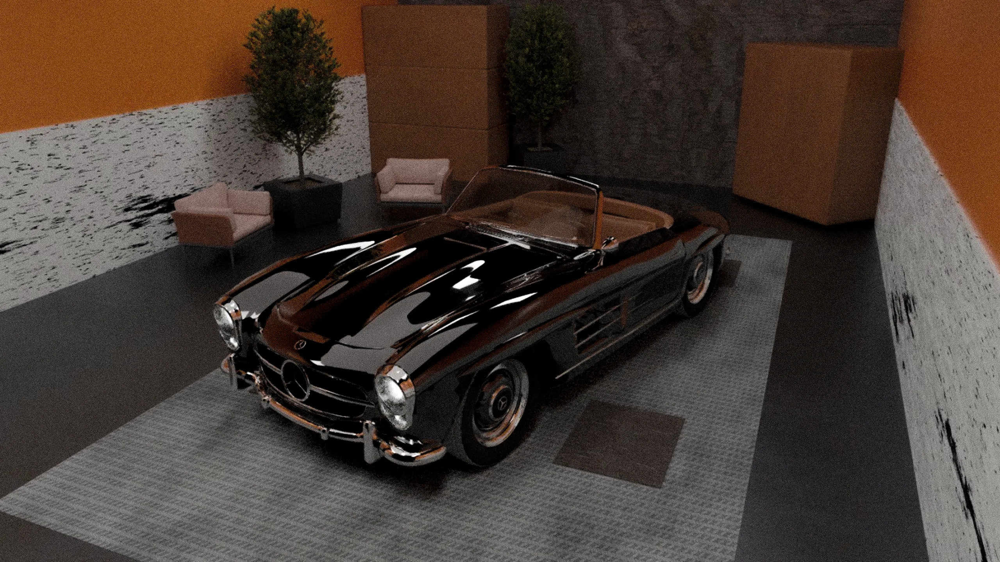
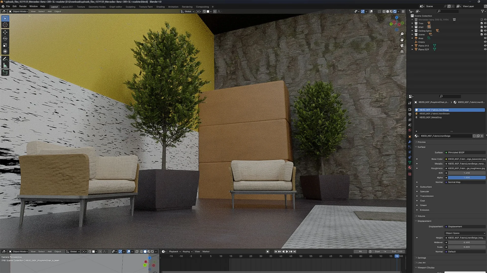
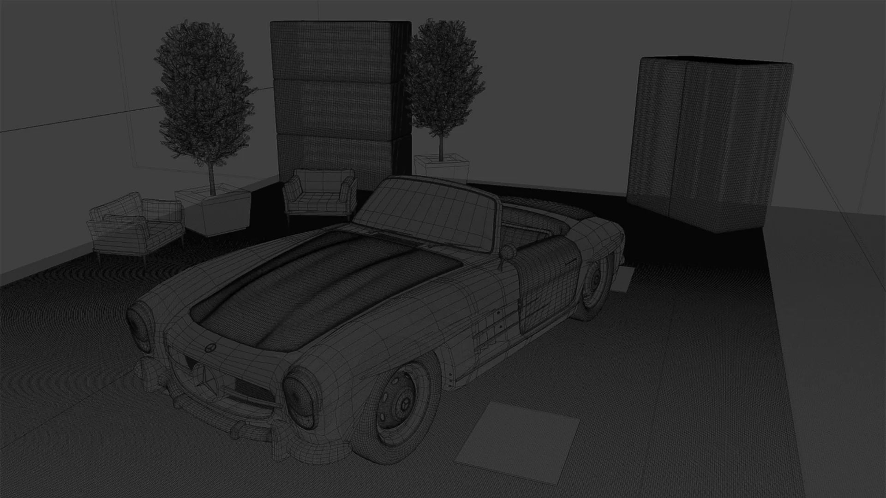
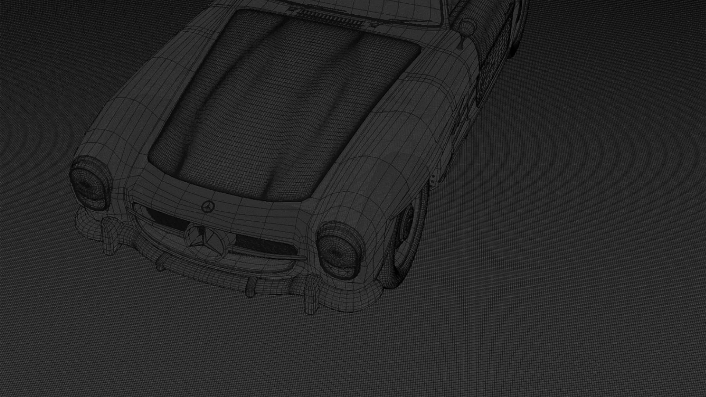
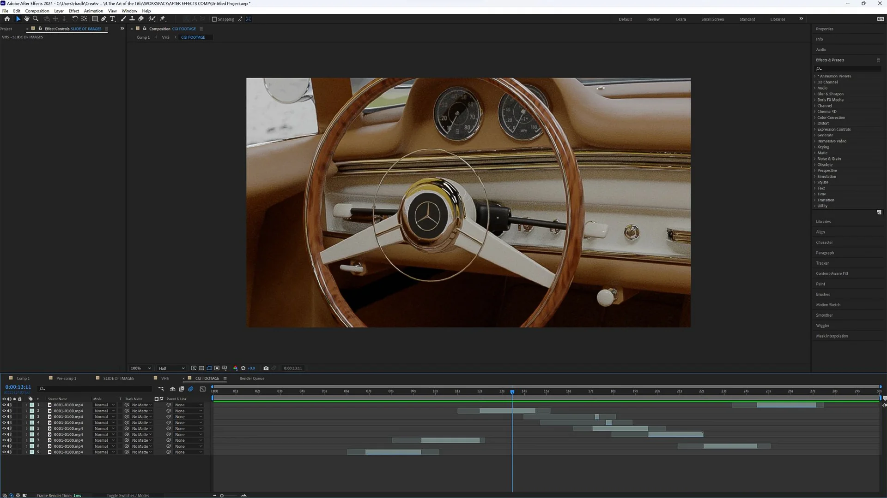

Overview
This project involved creating a concept intro video for a documentary focused on old-school cars. The goal was to design a visually engaging and stylistic title sequence that captures the essence of classic automobiles while setting the tone for the documentary.
I used Blender for 3D modeling and animation, along with Adobe After Effects for compositing and post-production. Blender did most of the heavy lifting, as I captured the majority footage inside of it.The concept was to highlight the unique qualities that make vintage cars so iconic by showcasing close-up shots of key exterior details. These included the rims, dashboard, seats, hood, and rear, emphasizing the craftsmanship and timeless appeal of these vehicles.
For this project, I selected the Mercedes 300SL, an automotive legend recognized for its striking gullwing doors and elegant design. This car has long been sought after by collectors and enthusiasts, making it a perfect subject for a documentary introduction. The close-up shots were carefully framed and lit to enhance the textures, reflections, and intricate details that define the character of classic cars.




The final sequence captures the nostalgia and artistry of vintage automobiles while maintaining a cinematic and modern aesthetic. Through a combination of smooth camera movements, lighting effects, and motion design, the title sequence successfully immerses the viewer in the experience of a premium vehicle, setting the stage for the documentary.